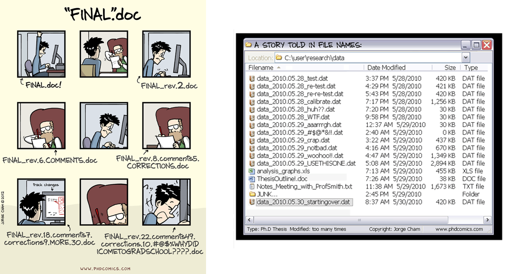

7 :books: Version control with Git
7.1 Introduction
7.1.1 Overview
Does the following situation seem sadly familiar? The challenge here is not only that you have no idea which draft is actually the latest version of the document, but also that it is almost impossible to understand what decision on the document content was taken when.

Version control is the process by which the development of a document is clearly identified. It provides huge benefits to organization, archiving, and being able to find your files easily when you need them. Git is a tool that
7.1.2 Learning objectives
In this chapter, we introduce the basic elements of version control. We will learn the terminology and practice version control on a need-to-know basis across the workshop.
What is version control?
What tools are available to support version control?
How to set up Git version control for a project?
7.2 Version control
Version control generally applies at a level of a project. It tracks and manages different drafts and versions for each document in the project.
With version control, you will only see a single file, which is the most recent version (final version). This helps avoiding confusion.
Version control provides an audit trail for the revisions and updates of final versions.
Version control tracks what changes have been made, by whom and when, so that you do no longer need to save a copy of your documents with your name or the date in the filename.
Version control allows you to discard recent updates and restore an earlier version of our project if needed.

7.3 Git, GitHub and GitHub Desktop
 |
Git | Free and open programme that tracks changes to your files over time. |
 |
GitHub | Cloud-based hosting platform that lets you host and manage Git repositories. GitHub synchronizes your local files online and enables you to collaborate with others (and yourself). |
 |
GitHub Desktop | Application that allows to use Git commands seamlessly through a visual interface instead of using the command line (for software developers) or GitHub’s website. |
We will always use these three tools together.
Please refer to the following sections for instructions on creation/installation steps:
- Create a GitHub account (Section B.1)
- Install GitHub Desktop (Section B.2)

7.4 Set up Git version control for a project
A repository is a database of all changes in your project. You will have a personal copy of all the final versions of the documents in the project (working copy) which will appear on your computer as a folder.
Open GitHub Desktop

In GitHub Desktop, you can create a new repository by selecting File > New repository.

- Enter data_science_workshop_sept_2022 as the name of your new repository.
- Click Choose… to select the local directory in which your new repository will be created. Using Windows Explorer, navigate to the local repository of your choice.
- Check Initialize this repository with a README to create a README file in your new repository. This is optional and you will be able to create a README file later if you wish to do so.
- Click on Create repository.

7.5 To go further
To learn more about Git, we refer you to the resources listed in Section 6.1.